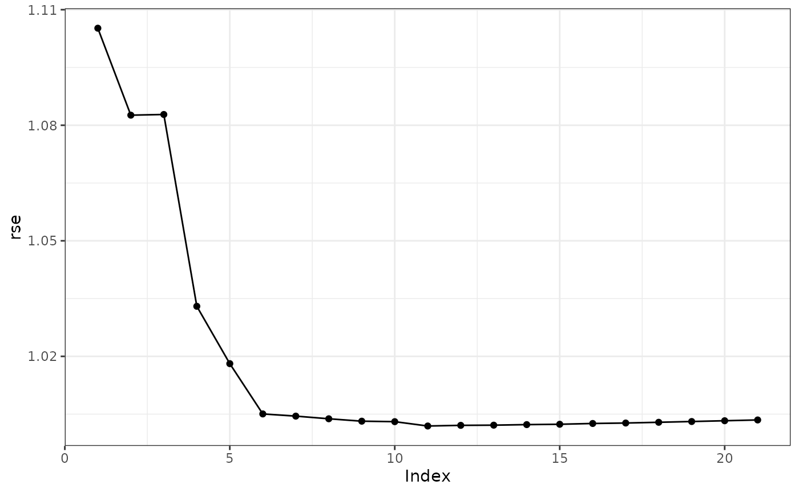

Run the Control Polygon Reduction Algorithm.
Usage
cpr(x, keep = -1, p = 2, progress = interactive(), ...)
# S3 method for cpr_cpr
summary(object, ...)Arguments
- x
a
cpr_cpobject- keep
keep (store) the regression fit for models with
keepor fewer internal knots, e.g.,keep = 3will result in the regression fit for models with 0, 1, 2, and 3 internal knots being saved in their respectivecpr_cpobjects. The default iskeep = -1so that no regression models are retained.- p
defaults to 2L, the L^p norm used in determining the influence weight of each internal knot.
- progress
show a progress bar.
- ...
not currently used
- object
a
cpr_cprobject
Details
cpr runs the control polygon reduction algorithm.
keep will keep the regression fit as part of the cpr\_cp object
for models with up to and including keep fits. For example, if keep =
10 then the resulting cpr\_cpr object will have the regression fit
stored in the first keep + 1 (zero internal knots, one internal knot,
..., keep internal knots) cpr\_cp objects in the list. The
limit on the number of stored regression fits is to keep memory usage down.
Examples
#############################################################################
# Example 1: find a model for log10(pdg) = f(day) from the spdg data set
if (FALSE) {
# need the lme4 package to fit a mixed effect model
require(lme4)
# construct the initial control polygon. Forth order spline with fifty
# internal knots. Remember degrees of freedom equal the polynomial order
# plus number of internal knots.
init_cp <- cp(log10(pdg) ~ bsplines(day, df = 54, bknots = c(-1, 1)) + (1|id),
data = spdg, method = lme4::lmer)
cpr_run <- cpr(init_cp)
plot(cpr_run, color = TRUE)
plot(cpr_run, type = "rse")
summary(cpr_run)
# preferable model is in index 5
preferable_cp <- cpr_run[[5]]
}
#############################################################################
# Example 2: logistic regression
# simulate a binary response Pr(y = 1 | x) = p(x)
p <- function(x) { 0.65 * sin(x * 0.70) + 0.3 * cos(x * 4.2) }
set.seed(42)
x <- runif(2500, 0.00, 4.5)
sim_data <- data.frame(x = x, y = rbinom(2500, 1, p(x)))
# Define the initial control polygon
init_cp <- cp(formula = y ~ bsplines(x, df = 54, bknots = c(0, 4.5)),
data = sim_data,
method = glm,
method.args = list(family = binomial())
)
# run CPR, preferable model is in index 7
cpr_run <- cpr(init_cp)
summary(cpr_run)
#> dfs n_iknots iknots loglik rss rse wiggle fdsc
#> 1 4 0 -1524.367 3048.735 1.1051914 5.670049e+00 1
#> 2 5 1 0.729119.... -1471.933 2943.866 1.0862349 8.075067e+02 2
#> 3 6 2 0.650666.... -1445.352 2890.703 1.0765979 1.468561e+03 4
#> 4 7 3 0.650666.... -1444.725 2889.451 1.0765805 1.244232e+03 4
#> 5 8 4 0.650666.... -1318.146 2636.293 1.0285438 9.081719e+03 6
#> 6 9 5 0.587696.... -1300.001 2600.002 1.0216449 1.841409e+04 7
#> 7 10 6 0.587696.... -1256.983 2513.965 1.0048008 2.793707e+04 8
#> 8 11 7 0.587696.... -1255.741 2511.483 1.0045063 2.735703e+04 8
#> 9 12 8 0.587696.... -1255.228 2510.456 1.0045028 2.695608e+04 8
#> 10 13 9 0.587696.... -1252.228 2504.456 1.0035034 6.658738e+04 8
#> 11 14 10 0.587696.... -1251.154 2502.309 1.0032747 1.566095e+05 8
#> 12 15 11 0.587696.... -1249.133 2498.266 1.0026657 2.533185e+05 11
#> 13 16 12 0.587696.... -1243.738 2487.476 1.0006995 1.053843e+06 12
#> 14 17 13 0.328569.... -1243.630 2487.260 1.0008574 1.057876e+06 10
#> 15 18 14 0.328569.... -1242.974 2485.948 1.0007950 1.194616e+06 11
#> 16 19 15 0.328569.... -1239.805 2479.611 0.9997200 1.811530e+06 15
#> 17 20 16 0.249212.... -1238.228 2476.456 0.9992852 3.120671e+06 16
#> 18 21 17 0.249212.... -1238.225 2476.449 0.9994854 3.415695e+06 16
#> 19 22 18 0.249212.... -1237.759 2475.518 0.9994991 4.376128e+06 16
#> 20 23 19 0.249212.... -1234.025 2468.050 0.9981917 4.775024e+06 16
#> 21 24 20 0.249212.... -1233.591 2467.183 0.9982179 4.949395e+06 16
#> 22 25 21 0.249212.... -1233.559 2467.118 0.9984064 4.936030e+06 16
#> 23 26 22 0.249212.... -1230.769 2461.538 0.9974782 5.285301e+06 20
#> 24 27 23 0.249212.... -1230.068 2460.136 0.9973956 5.376343e+06 22
#> 25 28 24 0.249212.... -1230.026 2460.053 0.9975806 4.435994e+06 22
#> 26 29 25 0.249212.... -1228.749 2457.498 0.9972641 6.731999e+06 22
#> 27 30 26 0.249212.... -1228.719 2457.437 0.9974537 6.772837e+06 22
#> 28 31 27 0.249212.... -1228.492 2456.984 0.9975637 6.896918e+06 22
#> 29 32 28 0.249212.... -1228.080 2456.161 0.9975986 6.678374e+06 24
#> 30 33 29 0.249212.... -1225.369 2450.738 0.9966986 7.374691e+06 26
#> 31 34 30 0.249212.... -1225.204 2450.407 0.9968335 8.134362e+06 26
#> 32 35 31 0.249212.... -1223.760 2447.521 0.9964482 9.739136e+06 28
#> 33 36 32 0.249212.... -1223.585 2447.170 0.9965789 9.599515e+06 28
#> 34 37 33 0.249212.... -1221.897 2443.795 0.9960936 1.053703e+07 30
#> 35 38 34 0.249212.... -1221.672 2443.344 0.9962041 1.072229e+07 30
#> 36 39 35 0.249212.... -1221.223 2442.446 0.9962232 1.081025e+07 32
#> 37 40 36 0.249212.... -1221.206 2442.412 0.9964187 1.078691e+07 32
#> 38 41 37 0.249212.... -1220.555 2441.109 0.9963555 1.086991e+07 36
#> 39 42 38 0.077664.... -1220.425 2440.851 0.9965055 1.074457e+07 36
#> 40 43 39 0.077664.... -1220.246 2440.492 0.9966350 1.111247e+07 38
#> 41 44 40 0.077664.... -1220.161 2440.322 0.9968031 1.090847e+07 38
#> 42 45 41 0.077664.... -1220.109 2440.217 0.9969848 1.194348e+07 38
#> 43 46 42 0.077664.... -1219.814 2439.627 0.9970673 1.318852e+07 38
#> 44 47 43 0.077664.... -1219.373 2438.747 0.9970905 1.319868e+07 38
#> 45 48 44 0.077664.... -1219.208 2438.415 0.9972260 1.321556e+07 38
#> 46 49 45 0.077664.... -1219.052 2438.103 0.9973656 1.323116e+07 38
#> 47 50 46 0.077664.... -1218.831 2437.661 0.9974787 1.324242e+07 38
#> 48 51 47 0.077664.... -1218.811 2437.622 0.9976742 1.323149e+07 38
#> 49 52 48 0.077664.... -1218.801 2437.602 0.9978740 1.323166e+07 38
#> 50 53 49 0.077664.... -1218.797 2437.594 0.9980761 1.323104e+07 38
#> 51 54 50 0.077664.... -1218.796 2437.592 0.9982798 1.323654e+07 38
#> Pr(>w_(1)) loglik_elbow rse_elbow
#> 1 NA
#> 2 < 2.22e-16
#> 3 < 2.22e-16
#> 4 0.01806100
#> 5 < 2.22e-16
#> 6 < 2.22e-16
#> 7 < 2.22e-16
#> 8 4.0749e-07
#> 9 0.00010329
#> 10 1.4766e-14
#> 11 1.4394e-08 <<< <<<
#> 12 1.7764e-15
#> 13 < 2.22e-16
#> 14 0.00304633
#> 15 3.8724e-07
#> 16 1.4433e-15
#> 17 < 2.22e-16
#> 18 0.31997338
#> 19 2.2690e-07
#> 20 2.7955e-08
#> 21 9.2284e-09
#> 22 0.00896420
#> 23 8.3824e-10
#> 24 3.2263e-10
#> 25 0.00190991
#> 26 2.1002e-11
#> 27 0.00360729
#> 28 8.2562e-08
#> 29 1.2764e-12
#> 30 1.0369e-13
#> 31 3.9331e-08
#> 32 2.2204e-16
#> 33 6.0272e-09
#> 34 < 2.22e-16
#> 35 6.3091e-11
#> 36 < 2.22e-16
#> 37 0.00337528
#> 38 < 2.22e-16
#> 39 8.0105e-09
#> 40 7.1681e-11
#> 41 1.5716e-07
#> 42 6.3048e-06
#> 43 7.1808e-08
#> 44 4.7848e-08
#> 45 5.5929e-08
#> 46 5.0250e-08
#> 47 3.4693e-08
#> 48 0.00031470
#> 49 0.00361281
#> 50 0.02308096
#> 51 0.18953185
plot(cpr_run, color = TRUE, type = "rse")
plot(cpr_run, color = TRUE, from = 5, to = 9, show_spline = TRUE)
#> Error in eval(parse(text = paste("plot(", paste(paste0(nm, "[[", seq(from = from, to = to, by = 1), "]]"), collapse = ", "), ", ...)"))): object 'cpr_run' not found
# plot the fitted spline and the true p(x)
sim_data$pred_select_p <- plogis(predict(cpr_run[[7]], newdata = sim_data)$pred)
ggplot2::ggplot(sim_data) +
ggplot2::theme_bw() +
ggplot2::aes(x = x) +
ggplot2::geom_point(mapping = ggplot2::aes(y = y), alpha = 0.1) +
ggplot2::geom_line(mapping = ggplot2::aes(y = pred_select_p, color = "pred_select_p")) +
ggplot2::stat_function(fun = p, mapping = ggplot2::aes(color = 'p(x)'))

# compare to gam and a binned average
sim_data$x2 <- round(sim_data$x, digits = 1)
bin_average <-
lapply(split(sim_data, sim_data$x2), function(x) {
data.frame(x = x$x2[1], y = mean(x$y))
})
bin_average <- do.call(rbind, bin_average)
ggplot2::ggplot(sim_data) +
ggplot2::theme_bw() +
ggplot2::aes(x = x) +
ggplot2::stat_function(fun = p, mapping = ggplot2::aes(color = 'p(x)')) +
ggplot2::geom_line(mapping = ggplot2::aes(y = pred_select_p, color = "pred_select_p")) +
ggplot2::stat_smooth(mapping = ggplot2::aes(y = y, color = "gam"),
method = "gam",
formula = y ~ s(x, bs = "cs"),
se = FALSE,
n = 1000) +
ggplot2::geom_line(data = bin_average
, mapping = ggplot2::aes(y = y, color = "bin_average"))